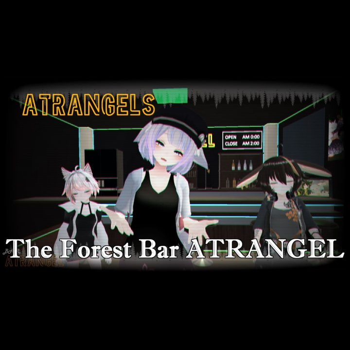
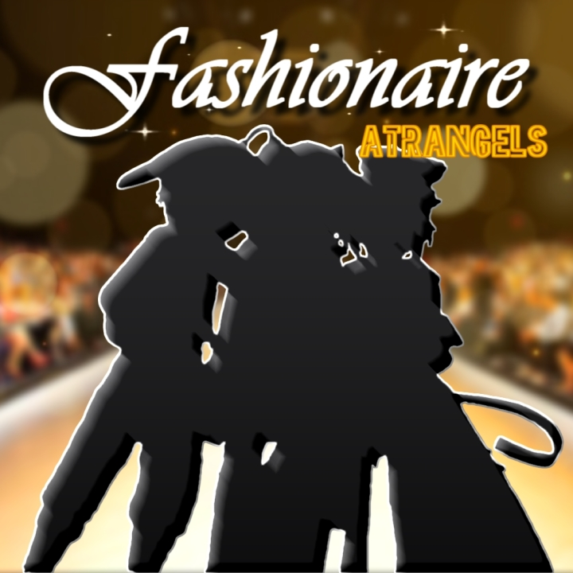

ATRANGELS
Atrangelsは、2020年4月に結成されたラップユニット。
メンバーはUnico、GiGAR、ハクロウの3人。
仮想世界VRChatから始まった彼らの歌は、言葉を超え、電波の海を超え、新しい音として響く。
|  | The Forest BAR ATRANGELMusic Vket1 |
|---|---|
| The Forest BAR ATRANGELは、Atrangelsの初のデジタルCD。 彼らの起源となったBAR ATRANGELをテーマにした「The Forest BAR ATRANGEL」を含めた3曲を収録。 有料盤には、彼らの発足秘話や製作裏話などの特典映像付き。 |
|
| 200円 / 3曲 |
| PULL THE TRIGGERMusic Vket2 | |
|---|---|
| PULL THE TRIGGERは、Atrangelsの2枚目のデジタルCD。 銃を片手に、力強さ、勇敢さ、そして己の強さを武器に立ち向かう奴らの心を描いた「PULL THE TRIGGER」をもとに3曲を収録。 |
|
| 200円 / 3曲 |
|  | FashionaireMusic Vket3 |
|---|---|
| Fashionaireは、Atrangelsの3枚目のデジタルCD。 VR特有のファッションの気軽さとは反面、アーティストとして輝かせるセンスと個性を表現した「Fashionaire」をもとに2曲を収録。 Fashionaireは「ファッションを楽しむ者」を意味するFashion + ~naireの造語。 |
|
| 200円 / 2曲 |